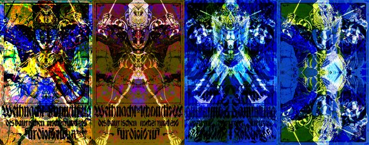

← Async Art — living works · all collections
by Hulki Okan Tabak · Async Art Master #3811 · four-phase · time rule: UTC
Updates four times a day to reflect sunrise / day / sunset / night cycles.

Sunrise 06:00–06:59 · Day 07:00–17:59 · Sunset 18:00–18:59 · Night 19:00–05:59 (UTC)
The full-size files live on IPFS; each is linked on three public gateways, in the order to try them (gateway.pinata.cloud, ipfs.io, dweb.link). Every line says what our own check found: 5 we keep this file pinned, 1 our own copy, pinned here and verified on upload.
QmPuaAtKkEwCSj… gateway.pinata.cloud · ipfs.io · dweb.link — we keep this file pinned, checked 2026-09-24 11:46QmUnjGTSUPRZUZ… gateway.pinata.cloud · ipfs.io · dweb.link — we keep this file pinned, checked 2026-09-24 11:46QmRht7gAxdua2o… gateway.pinata.cloud · ipfs.io · dweb.link — we keep this file pinned, checked 2026-09-24 11:46QmQnh5aqN7wdPv… gateway.pinata.cloud · ipfs.io · dweb.link — we keep this file pinned, checked 2026-09-24 11:46bafybeigqz7vfo… gateway.pinata.cloud · ipfs.io · dweb.link — our own copy, pinned here and verified on upload, checked 2026-09-22QmRwcGVebGuAJw… gateway.pinata.cloud · ipfs.io · dweb.link — we keep this file pinned, checked 2026-09-24 11:46QmUnjGTSUPRZUZ… gateway.pinata.cloud · ipfs.io · dweb.link — we keep this file pinned, checked 2026-09-24 11:46QmUnjGTSUPRZUZ… gateway.pinata.cloud · ipfs.io · dweb.link — we keep this file pinned, checked 2026-09-24 11:46QmQnh5aqN7wdPv… gateway.pinata.cloud · ipfs.io · dweb.link — we keep this file pinned, checked 2026-09-24 11:46QmPuaAtKkEwCSj… gateway.pinata.cloud · ipfs.io · dweb.link — we keep this file pinned, checked 2026-09-24 11:46QmRht7gAxdua2o… gateway.pinata.cloud · ipfs.io · dweb.link — we keep this file pinned, checked 2026-09-24 11:46Bavarian Red Cross by Hulki Okan Tabak minted 2021 on Async Art 4 artworks based on World War I propaganda posters from Germany. In this case Bavarian Red Cross' efforts to raise some money for army. ... The Great War, history, politics, art, posters and propaganda are topics of interest for me. It was kind of natural that I wanted to incorporate that in my cryptoart creations. The desire led to a selection of public domain pieces out of copyright from the Library of Congress archives. I created all sorts of derivative pacifist and tongue-in-cheek works. So far I have only minted a handful on KnownOrigin. Starting September 2021, I will mint a more comprehensive set on Async Art and KO…
async.art · OpenSea · Etherscan
Generated archive pages. Content identifiers point to the public IPFS network.